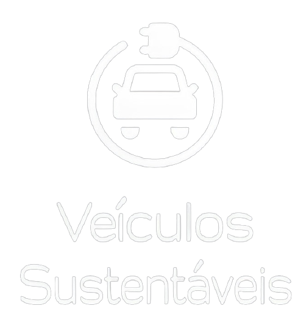
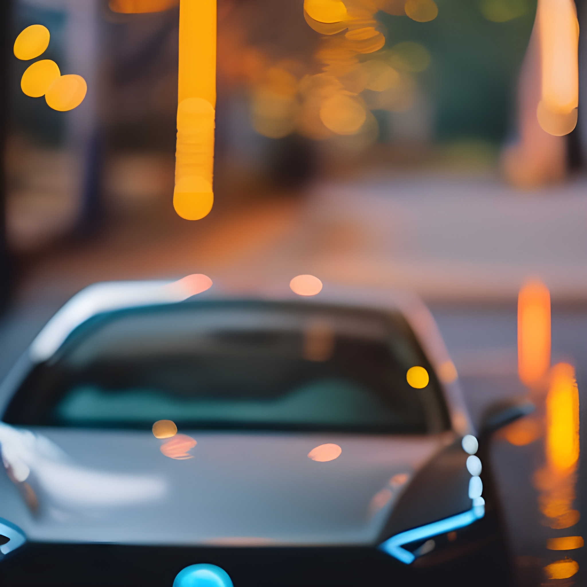
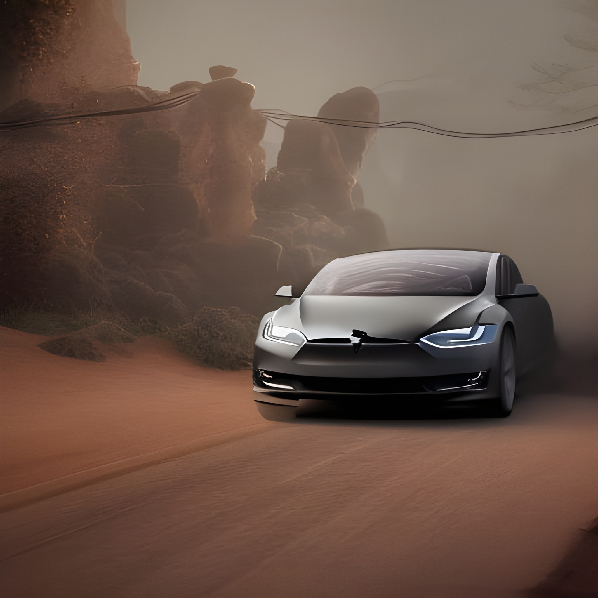
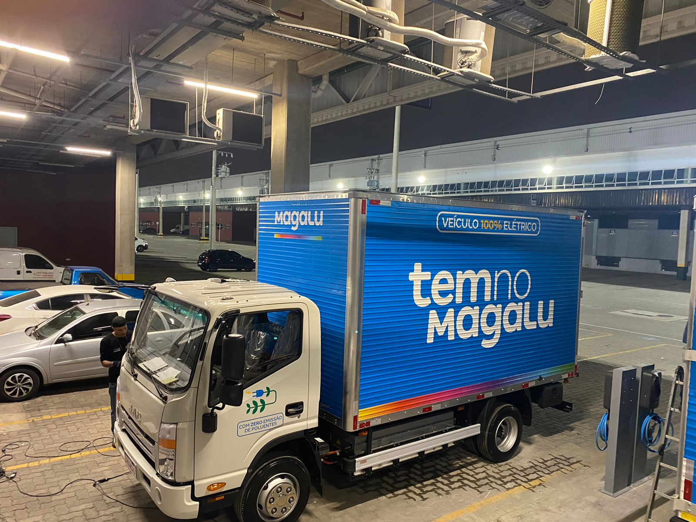
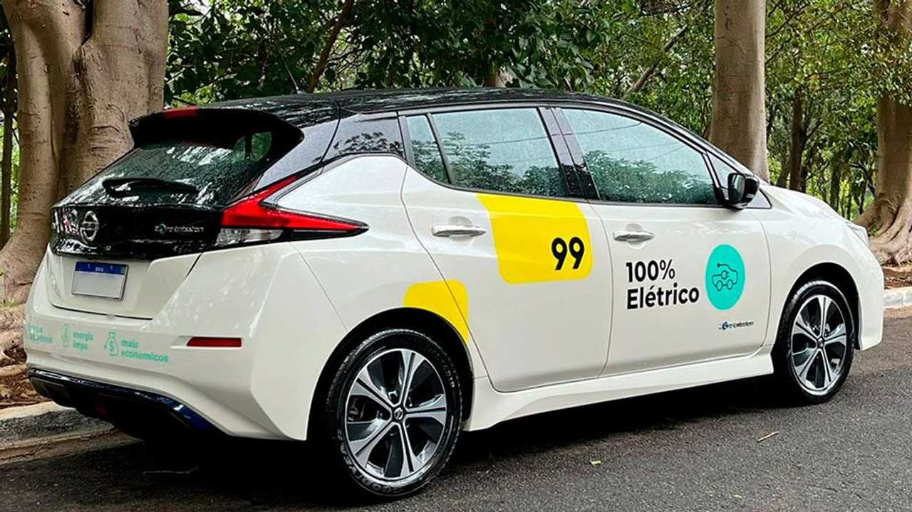
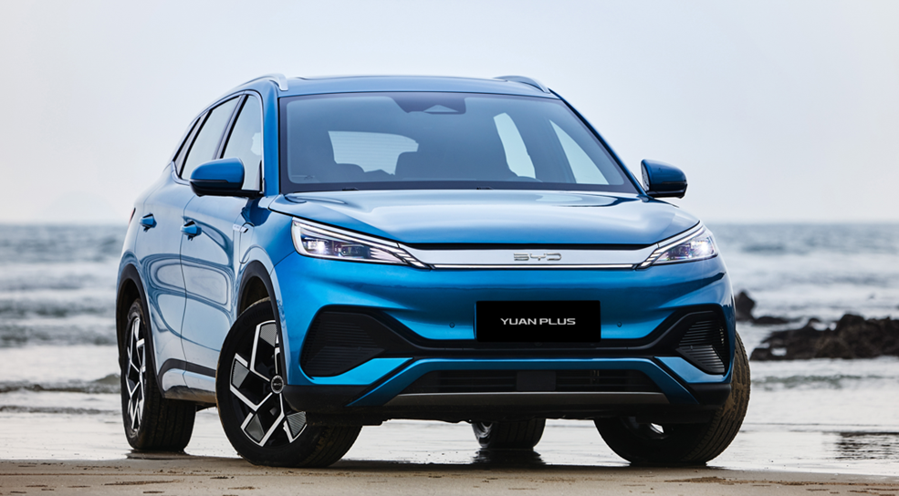

A era dos elétricos chegou
Se informe agora conosco e não fique para trás na evolução
O que são Veículos Sustentáveis?
O Motor de um carro elétrico
Um veículo sustentável é aquele que conta com recursos que contribuem para a diminuição do impacto ambiental através da exploração de recursos naturais e da diminuição de gases poluentes na atmosfera, tendo como até eliminar os efeitos da emissão de poluentes causadores das mudanças climáticas.
O Motor de um carro elétrico
O motor de corrente alternada (AC) que também é conhecido como motor de indução é o mais utilizado devido as suas diversas vantagens como por exemplo, o baixo custo em manutenção, montagem, fabricação e simplicidade em relação aos motores de corrente contínua. Esse motor é usado em modelos como o Tesla Model S, Tesla Model X, Toyota RAV4, Mahindra Reva e2o

Mas quais são seus benefícios ao meio ambiente?
Uso de energia renovável
Há diversas maneiras de se obter energia elétrica via fontes
renováveis, ou seja, que se regeneram naturalmente
em um curto espaço de tempo.
De maneira geral, o custo por quilômetro rodado nos veículos
elétricos é mais baixo doque em carros a combustão.
Em comparação com os carros a combustão, é possível afirmar que
os veículos elétricos são, sim, mais sustentáveis. No entanto, eles
ainda enfrentam alguns desafios. Um deles é a emissão de carbono
durante a sua fabricação, principalmente
no caso das baterias.

Agora algumas empresas com ideias sustentáveis
Mileto
Uma Startup Brasileira de veículos elétricos
que tem como seu alvo mini truck e
motocicletas é a Mileto, localizada em RJ

MagaLu
O serviço de transportadora da Magalu têm seus caminhões elétricos de produtos, usado para abastecer lojas por todo Brasil.

99Táxi
Atualmente no Brasil se tem 9 empresas
trabalhando em conjunto para produzir carros
elétricos em massa uma delas sendo o
aplicativo de viagens 99 Taxi.

BYD
A BYD, ela também foi responsável por entregar ao Brasil Viaturas elétricas para a policia civil.
E economicamente falando?
Quanto custa um carro elétrico?
Custo: Elétrico x Combustível
De um ano para cá o número de opções de carros elétricos no mercado brasileiro mais que duplicou. Há modelos compactos por menos de R$ 160 mil, tradicionais na faixa entre R$ 200 mil e R$ 300 mil e, claro, as opções de luxo que passam dos R$ 400 mil.
Custo: Elétrico x Combustível
Um carro a combustão que pode percorrer 9km/L de gasolina, distância percorrida por mês for de 500km, o dono deste veículo gastaria R$272,00 por mês com abastecimento para 56L. Em um ano, o gasto final chegaria a R$ 3.267,00, apenas com gasolina.
Gasto mensal de um carro elétrico nas mesmas condições é R$ 44. Anualmente, o veículo elétrico em questão, gastaria R$ 533,00.
Num âmbito geral, é possível afirmarmos que é menos custoso manter um carro elétrico do que um carro a combustão. Um entre diversos fatores é o motor a combustão ter 150 peças movíveis a serem lubrificadas com óleo, enquanto um motor elétrico ter apenas 24.
Responda o Quiz e veja quanto aprendeu sobre veículos sustentaveis